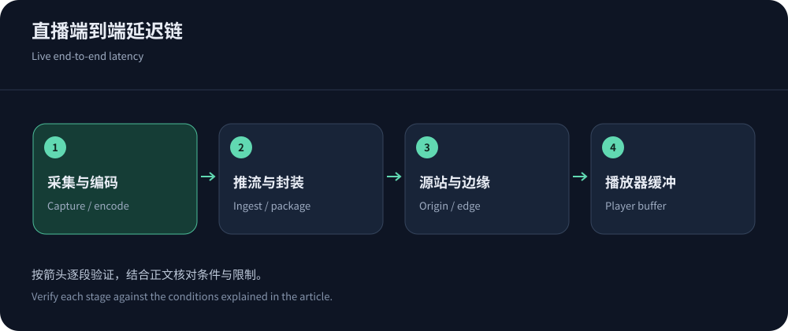
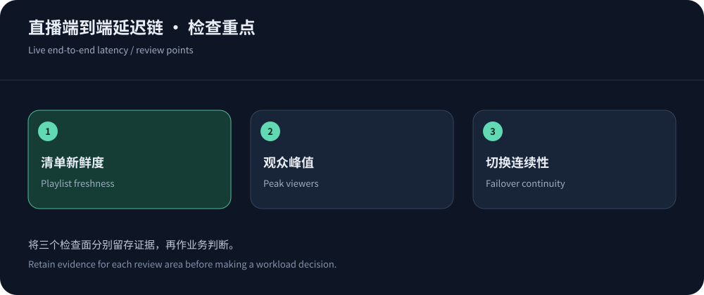

Give latency a business purpose
Sports, classes and two-way interaction have different delay tolerances. Lower latency leaves less buffering room and demands coordination across encoding, networking and playback. Define end-to-end targets with quality/stall requirements before buying.
No comparative benchmark is claimed; sources were checked on 14 October 2026. Validate with actual encoders and audience devices. VOD delivery has different freshness and peak behavior.
Decompose end-to-end latency
Capture, encoding, upload, transcoding, packaging, origin, edge and player buffering all add delay. Low RTT does not establish fresh video. Define measurement with clock error and device differences.
A CDN switch cannot remove encoder backlog, while stale playlists can delay a healthy origin. Align rendition, keyframe, packaging and player behavior across teams.


Match protocol support across the chain
RFC 8216 covers foundational HLS, not every later low-latency extension. Apple resources provide current implementation guidance. Origin, cache, delivery and player must support the selected behavior together.
Interactive media can need a specialized real-time system. WebSocket support alone is not a full media pipeline. Mixed interactive/broadcast architectures need timing and event synchronization.
Manage playlists separately from media
Live playlists mutate while completed segments may be immutable. Use distinct freshness policies for playlists, segments, DVR and ads, applying HTTP caching semantics and protocol requirements.
Validate authorization renewal and key isolation. Test late join, pause/resume, replay and end-of-stream; avoid manifests referencing unavailable objects.
Validate clocks and program timelines before broadcast. Record clock sources/error and use one method across candidates so timestamp skew is not mistaken for a faster CDN.
Peak viewers and monthly cost are different questions
Concurrency times delivered bitrate estimates media capacity, while viewer-hours estimate bytes. Include regional mix, join bursts, reconnects and retries. Steady-state samples do not prove event readiness.
Hypothetically, 1,000 viewers at 3Mbps require about 3Gbps of media and 1.35 decimal TB for one hour, before overhead/retries. Add transcoding, recording, storage, DVR, requests and logs; these are budget assumptions, not benchmarks.
Questions for live-delivery candidates
Existing media systems can evaluate CloudFront with eligible plans and related resources. Fastly has package-specific streaming restrictions. Integrated live platforms may reduce integration work but need exit/export review.
Ask about ingest, playback, latency mechanisms, concurrency, regions, authorization, DVR, recording and support. Generic HLS support does not establish every low-latency feature.
Exercise failure while the stream continues
Exercise ingest loss, origin switching, regional failures and client network changes. Validate backup timelines, media parameters, authorization and continuity rather than promising invisible switches.
Preserve access control and credentials during rollback. Existing viewers may retain old state. Include chat, commerce and teaching events so video recovery does not conceal broken workflows.
After exercises, revoke test access/ingest credentials and verify temporary recording, logs and transcoding jobs have stopped.


Use a preflight checklist and post-event evidence
Preflight TLS, authorization, renditions, captions, regions, fallback and alerts, with shared incident contacts and stable configurations.
Review startup, end-to-end delay, stalls, completion and cost by audience/device, retaining failures and methods. Use enterprise operations and billing analysis to make events repeatable.
Associate playback anomalies with encoder and player versions for reproducible follow-up.